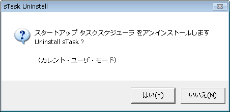

| アンインストール方法 |
|
| アンインストール方法 |
|
『スタートメニューの「sTaskアンインストール」メニューを実行』 または 『コントロールパネルの「アプリケーションの追加と削除」』
インストールしたときのオプションにより、どちらかの方法を選択してください。
上記のアンインストーラが見つからない場合、機能設定ダイアログの「再インストール」を実行し、アンインストールの方法を指定すると、アンインストールのためのショートカット等が作成されますので、それを利用してください。

アンインストーラは、レジストリに格納されている情報と、スタートメニューのショートカットアイコンを削除します。
プログラム本体、ヘルプファイルなどはユーザーが削除する必要があります。
複数ユーザで利用している場合は、全てのユーザがアンインストールしてからプログラム本体を削除してください。
アドミニストレータとしての権限がないユーザはアンインストールできません。
コマンドラインより、実行パラメーター「/delete」を付けて実行してください。
次のレジストリを削除します
設定データ
HKCU\Software\hi soft\stask キーおよび配下にあるキー、データ全て
HKCU\Software\hi_soft の中にある sTask というストリング
起動時の自動実行
HKCU\Software\Microsoft\Windows\CurrentVersion\run の中にあるsTask というキー
HKLM\Software\Microsoft\Windows\CurrentVersion\run の中にあるsTask というキー
アプリケーションの追加と削除に登録した場合
HKCU\Software\Microsoft\Windows\CurrentVersion\Uninstall の中にある
sTask というキー
HKLM\Software\Microsoft\Windows\CurrentVersion\Uninstall の中にある sTask というキー
スタートメニューに登録されたショートカットを削除